La Cuisine d'Ultia
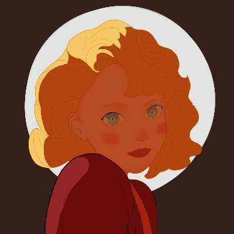Dessinateur Voici quelques plats réalisés et dégustés par Ultia.
Retrouver toutes ces dernières recettes sur son Instagram !
Pour l'instant: Pâtes Bolognaise, Tarte au maroilles, Pâtes aux brocolis

Voici quelques plats réalisés et dégustés par Ultia.
Retrouver toutes ces dernières recettes sur son Instagram !
Pour l'instant: Pâtes Bolognaise, Tarte au maroilles, Pâtes aux brocolis
 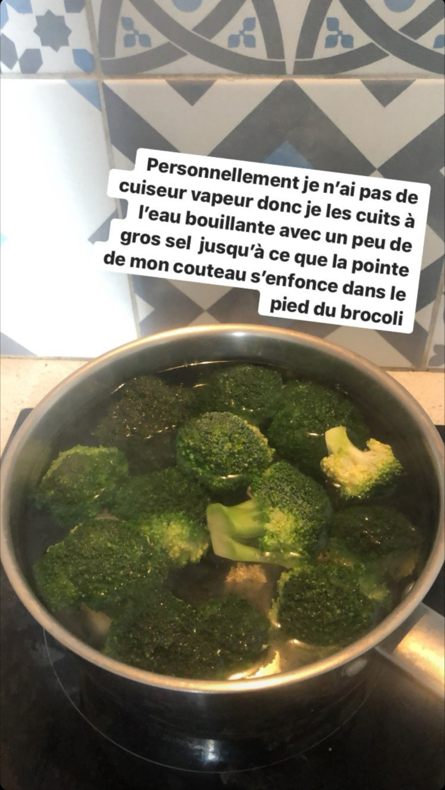
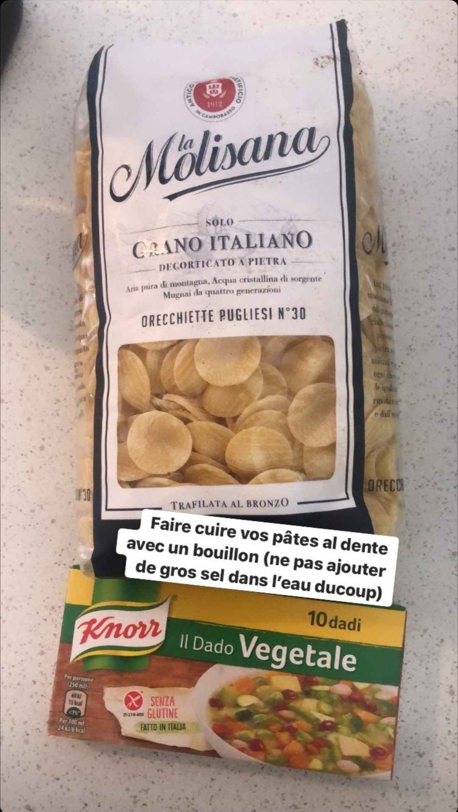 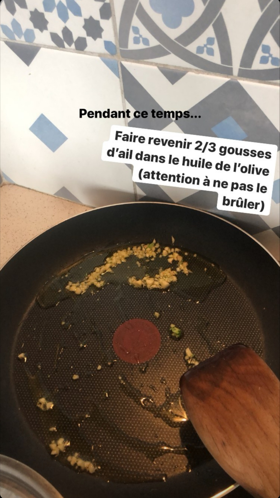 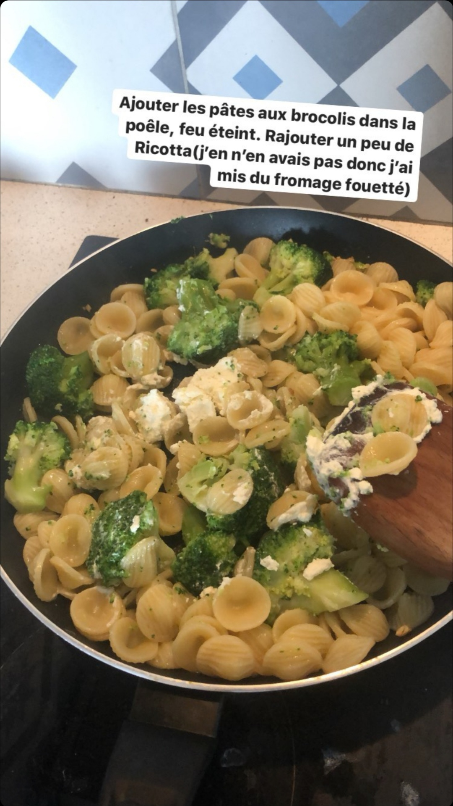
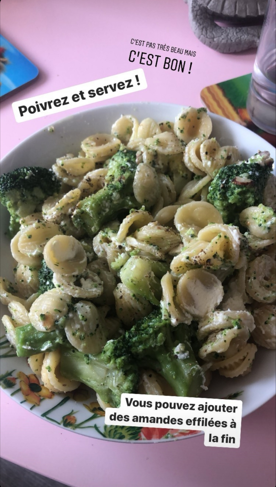
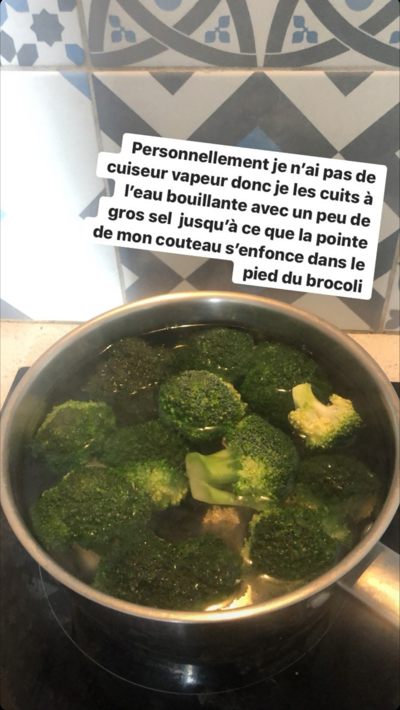
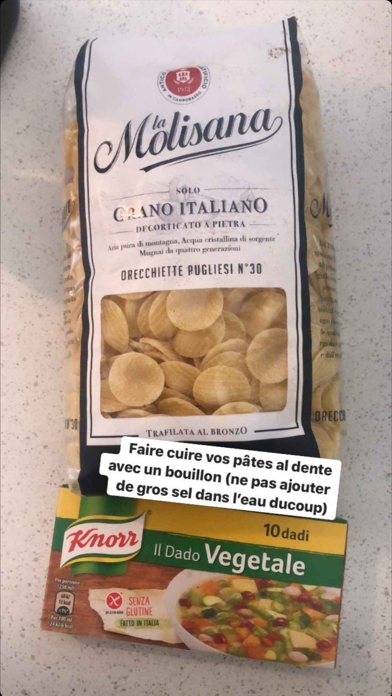 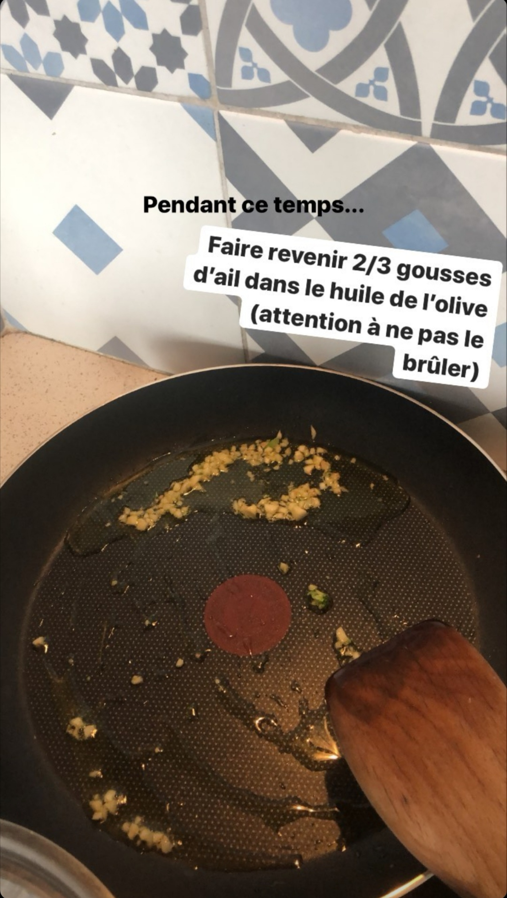 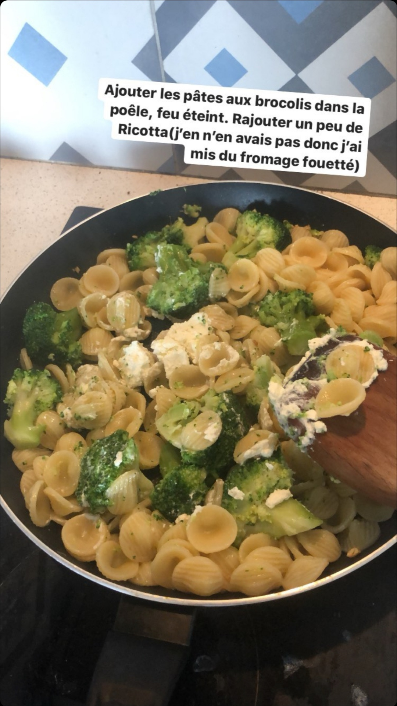
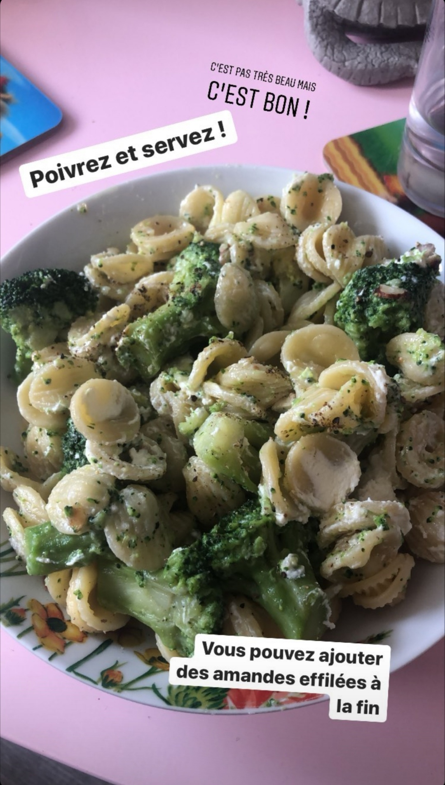